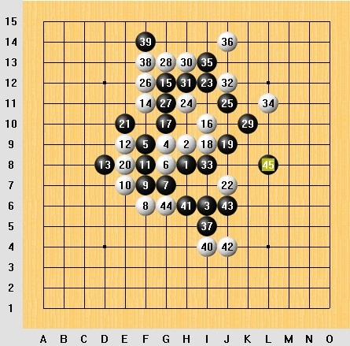
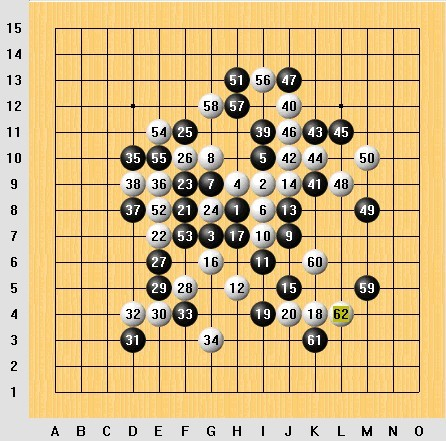
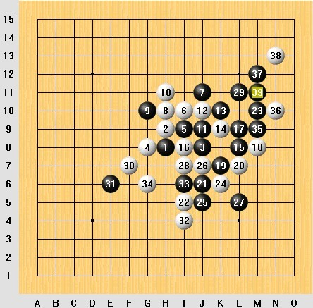

2011全团赛棋评
#1 2011全团赛棋评 作者：炫飞兔子 发表时间：2011-5-5 23:56:36
第一轮 郑蔚楠
她开的水月，偶交换。话说其实我根本不知道水月的谱。。。乱下乱下的，就赢了，，，

第二轮 对胡夕 零九年团体赛曾经对过她，在满盘的时候被杀了。。。
这次我开的斜月，她换了。。。哎啊，这个五，我还真不知道六下哪，七手我以为会盖斜二，没想到盖的横二，有点松口气，十一手要是下十二手那，我基本是没得防了，老天保佑，下的这。。。

第三轮 对的保定一队她下的金星，我换了。一个初中的小女孩儿。 21 手下完后才发现那个双杀有个唯一防，想了很久才想到的 23 手。

#2 Re:2011全团赛棋评 作者：炫飞冰弦 发表时间：2011-5-6 0:08:00
顶一下兔子~
#3 Re:2011全团赛棋评 作者：屏蔽 发表时间：2011-5-6 8:27:39
第一盘那个真不是水月。［ 炫飞兔子 于 2011-6-4 1:25:07 时花20金币送鲜花一朵］
#4 Re:Re:2011全团赛棋评 作者：杨文浩 发表时间：2011-5-6 10:52:45
引用：
原文由 屏蔽 发表于 2011-5-6 8:27:39 :
第一盘那个真不是水月。
一开始还没发现呢，回头再去看看，真不是水月。管他什么月，MM的棋还是很好看的
#5 Re:2011全团赛棋评 作者：自来水 发表时间：2011-5-6 11:16:21
其它没仔细看
=======上图对应的爱五子棋谱代码如下，以便你拆解：========
h8i9g7h9i10i8j9
======================================================第二轮的6手额，7手就斜月一打必胜了啊= =
然后怎就
=======上图对应的爱五子棋谱代码如下，以便你拆解：========
h8i9g7h9i10i8g9g10j7i7i6h5g6
======================================================
变瑞星了呢 ，对方13手错...后面.随便了
，对方13手错...后面.随便了
#6 Re:2011全团赛棋评 作者：自来水 发表时间：2011-5-6 11:26:40
话说对手怎么那么多小朋友捏
#7 Re:Re:2011全团赛棋评 作者：炫飞兔子 发表时间：2011-5-6 11:40:06
引用：
原文由 屏蔽 发表于 2011-5-6 8:27:39 :
第一盘那个真不是水月。
啊。。。打错了，是名月。。。
#8 Re:Re:Re:2011全团赛棋评 作者：屏蔽 发表时间：2011-5-6 14:10:29
引用：
原文由 炫飞兔子 发表于 2011-5-6 11:40:06 :引用：
原文由 屏蔽 发表于 2011-5-6 8:27:39 :
第一盘那个真不是水月。啊。。。打错了，是名月。。。
第一盘那个真不是名月……
#9 Re:2011全团赛棋评 作者：潇洒 发表时间：2011-5-6 14:22:55
山月..#10 Re:2011全团赛棋评 作者：冰雪笑醉 发表时间：2011-5-6 15:51:51
 兔子好棒
兔子好棒
#11 Re:Re:Re:Re:2011全团赛棋评 作者：炫飞兔子 发表时间：2011-5-6 17:04:23
引用：
原文由 屏蔽 发表于 2011-5-6 14:10:29 :引用：
原文由 炫飞兔子 发表于 2011-5-6 11:40:06 :引用：
原文由 屏蔽 发表于 2011-5-6 8:27:39 :
第一盘那个真不是水月。啊。。。打错了，是名月。。。
第一盘那个真不是名月……
 谱打错了。二跟四调换。。。
谱打错了。二跟四调换。。。
#12 Re:2011全团赛棋评 作者：潇洒 发表时间：2011-5-6 17:51:26
兔子 炫飞女一号棋手..
比赛下的不错XD..
#13 Re:2011全团赛棋评 作者：炫飞花 发表时间：2011-5-6 18:52:45
 噢，我家大爷
噢，我家大爷
#14 Re:2011全团赛棋评 作者：岑小鱼 发表时间：2011-5-6 19:45:02
纯粹顶贴。。。。。#15 Re:2011全团赛棋评 作者：怪 发表时间：2011-5-6 22:35:41
很牛叉#16 Re:2011全团赛棋评 作者：虎哥 发表时间：2011-5-6 23:47:08
兔大爷太牛了唉。
#17 Re:2011全团赛棋评 作者：龙嘉罗 发表时间：2011-5-7 13:03:58
哈哈 兔子的小结就是给力［ 雨一直下 于 2011-5-7 14:59:08 时奖励此帖[金币加 100 威望加1］
#18 Re:2011全团赛棋评 作者：炫飞水月 发表时间：2011-5-8 19:44:56
兔兔我顶你
#19 Re:2011全团赛棋评 作者：迷糊娃娃 发表时间：2011-5-10 10:15:09
第五轮对我的那盘41,43次序错了耶！